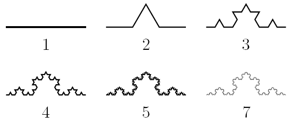

Снежинка Коха
Эта фигура — один из первых исследованных учеными фракталов. Она получается из трех копий кривой Коха, которая впервые появилась в статье шведского математика Хельге фон Коха в 1904 году. Эта кривая была придумана как пример непрерывной линии, к которой нельзя провести касательную ни в одной точке. Линии с таким свойством были известны и раньше (Карл Вейерштрасс построил свой пример еще в 1872 году), но кривая Коха замечательна простотой своей конструкции. Не случайно его статья называется «О непрерывной кривой без касательных, которая возникает из элементарной геометрии».

Рисунок и анимация отлично показывают, как по шагам строится кривая Коха. Первая итерация — просто начальный отрезок. Потом он делится на три равные части, центральная достраивается до правильного треугольника и затем выкидывается. Получается вторая итерация — ломаная линия, состоящая из четырех отрезков. К каждому из них применяется такая же операция, и получается четвертый шаг построения. Продолжая в том же духе, можно получать всё новые и новые линии (все они будут ломаными). А то, что получится в пределе (это уже будет воображаемый объект), и называется кривой Коха.